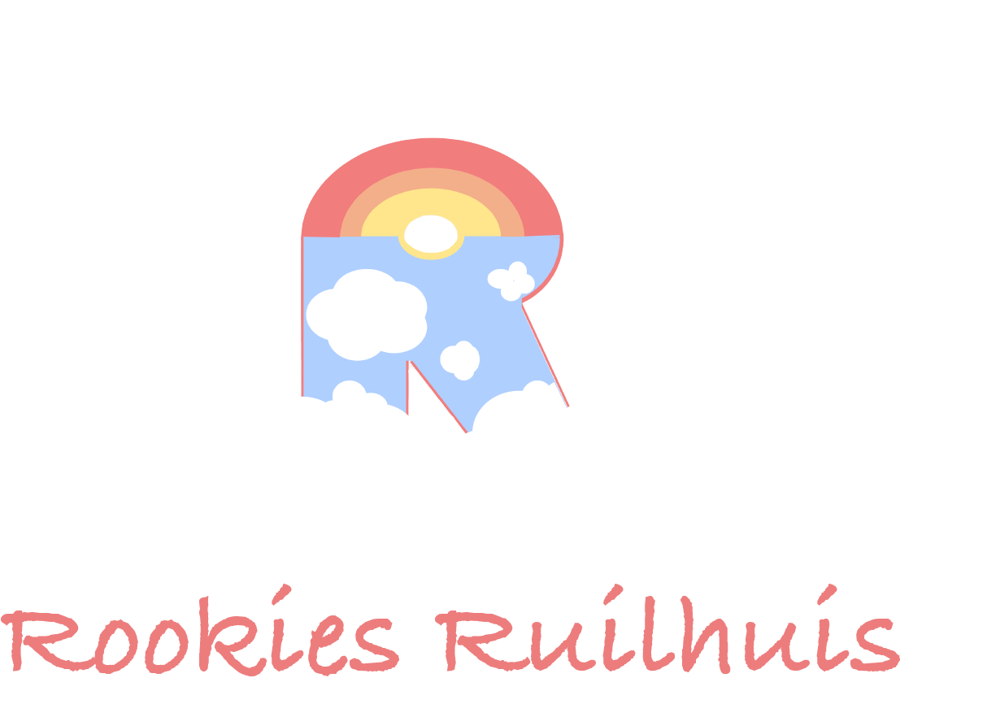
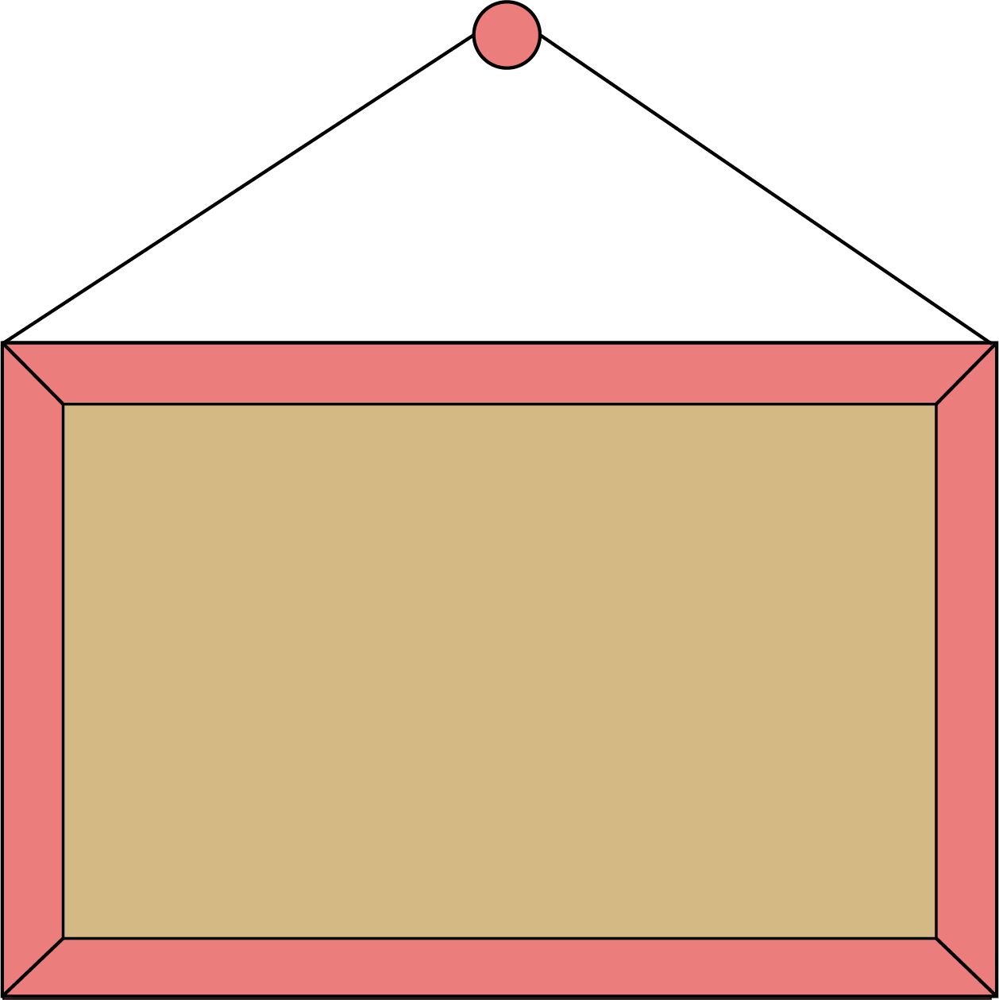
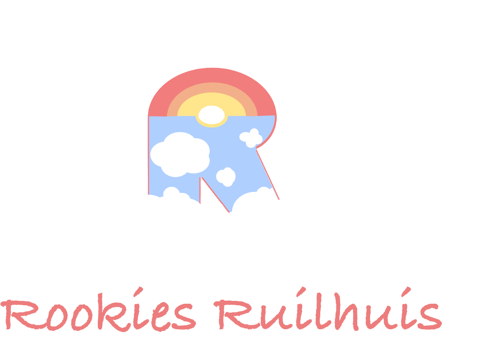
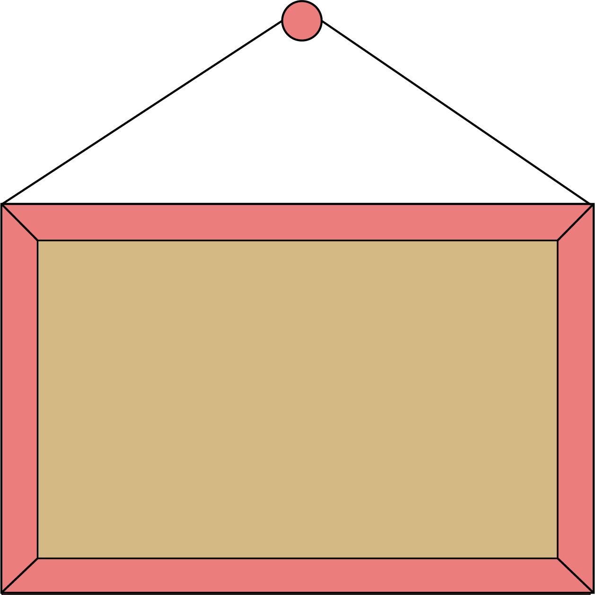
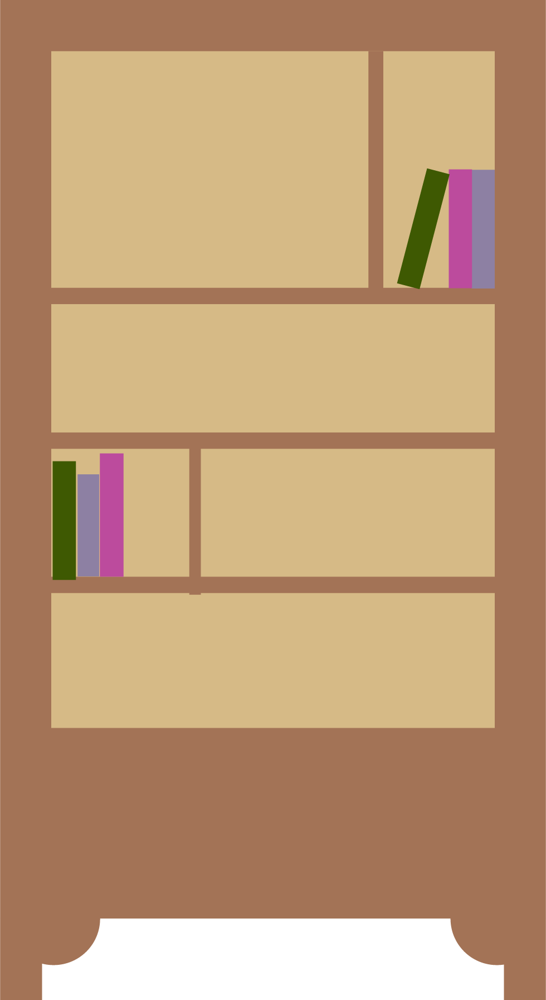
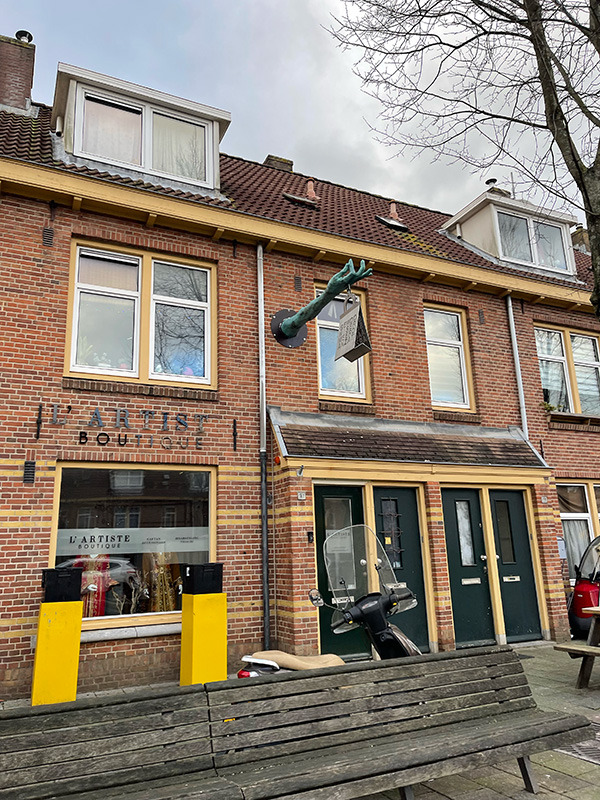
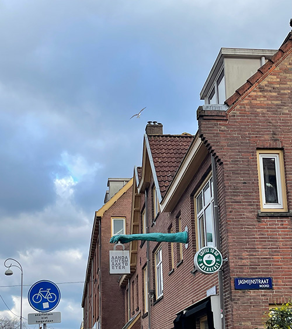
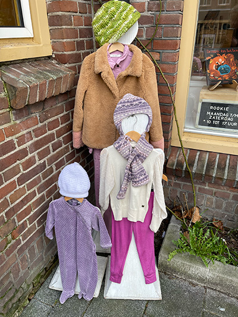
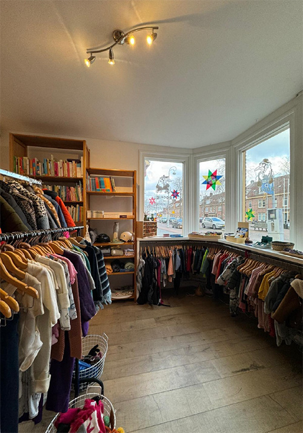

Welkom bij Rookies Ruilhuis, ik vertel op deze website over de tweedehandswinkel "Rookie de Recyclekid". Dit is een tweedehandswinkel in Amsterdam met kleding, speelgoed en veel meer! Kinderen groeien snel uit hun maat en is het daarom zo goed dat deze winkel bestaat!
Over ons
Wij zijn duurzaam bezig! Met het inbrengen van kinderspullen zet deze winkel het duurzame initiatief van ruilen weer goed in beeld.
Kinderen groeien snel en vinden speelgoed soms helemaal niet leuk meer. Rookie heeft een oplossing!
De spullen die je aantreft lijken wel zo goed als nieuw!
Bent u nog niet bekend met het ruilen van kleding? Hier leest u alvast wat regels die u van te voren moet weten.
 Locatie
De winkel staat in Amsterdam Noord en herken je aan deze straat. Een straat met dezelfde kleur huizen en bij elke winkel een arm met een tas als beeld. Het is een gekke straat die je niet vaak ziet en is het dus makkelijk te vinden.
 Bij aankomst zie je buiten al snel iets herkenbaars van de winkel, namelijk de kleding op de poppen. Dit is ook een kleine hint naar wat er binnen te vinden is. Als je naar binnen stapt zie je inderdaad allerlei kledingstukken.